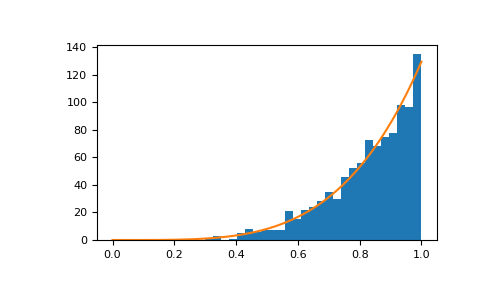

numpy.random.RandomState.power¶
method
-
RandomState.power(a, size=None)¶ Draws samples in [0, 1] from a power distribution with positive exponent a - 1.
Also known as the power function distribution.
Note
New code should use the
powermethod of adefault_rng()instance instead; see random-quick-start.- Parameters
- afloat or array_like of floats
Parameter of the distribution. Must be non-negative.
- sizeint or tuple of ints, optional
Output shape. If the given shape is, e.g.,
(m, n, k), thenm * n * ksamples are drawn. If size isNone(default), a single value is returned ifais a scalar. Otherwise,np.array(a).sizesamples are drawn.
- Returns
- outndarray or scalar
Drawn samples from the parameterized power distribution.
- Raises
- ValueError
If a < 1.
See also
Generator.powerwhich should be used for new code.
Notes
The probability density function is
The power function distribution is just the inverse of the Pareto distribution. It may also be seen as a special case of the Beta distribution.
It is used, for example, in modeling the over-reporting of insurance claims.
References
- 1
Christian Kleiber, Samuel Kotz, “Statistical size distributions in economics and actuarial sciences”, Wiley, 2003.
- 2
Heckert, N. A. and Filliben, James J. “NIST Handbook 148: Dataplot Reference Manual, Volume 2: Let Subcommands and Library Functions”, National Institute of Standards and Technology Handbook Series, June 2003. https://www.itl.nist.gov/div898/software/dataplot/refman2/auxillar/powpdf.pdf
Examples
Draw samples from the distribution:
>>> a = 5. # shape >>> samples = 1000 >>> s = np.random.power(a, samples)
Display the histogram of the samples, along with the probability density function:
>>> import matplotlib.pyplot as plt >>> count, bins, ignored = plt.hist(s, bins=30) >>> x = np.linspace(0, 1, 100) >>> y = a*x**(a-1.) >>> normed_y = samples*np.diff(bins)[0]*y >>> plt.plot(x, normed_y) >>> plt.show()
Compare the power function distribution to the inverse of the Pareto.
>>> from scipy import stats >>> rvs = np.random.power(5, 1000000) >>> rvsp = np.random.pareto(5, 1000000) >>> xx = np.linspace(0,1,100) >>> powpdf = stats.powerlaw.pdf(xx,5)
>>> plt.figure() >>> plt.hist(rvs, bins=50, density=True) >>> plt.plot(xx,powpdf,'r-') >>> plt.title('np.random.power(5)')
>>> plt.figure() >>> plt.hist(1./(1.+rvsp), bins=50, density=True) >>> plt.plot(xx,powpdf,'r-') >>> plt.title('inverse of 1 + np.random.pareto(5)')
>>> plt.figure() >>> plt.hist(1./(1.+rvsp), bins=50, density=True) >>> plt.plot(xx,powpdf,'r-') >>> plt.title('inverse of stats.pareto(5)')